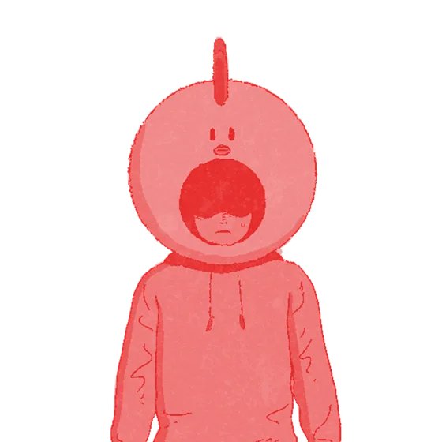
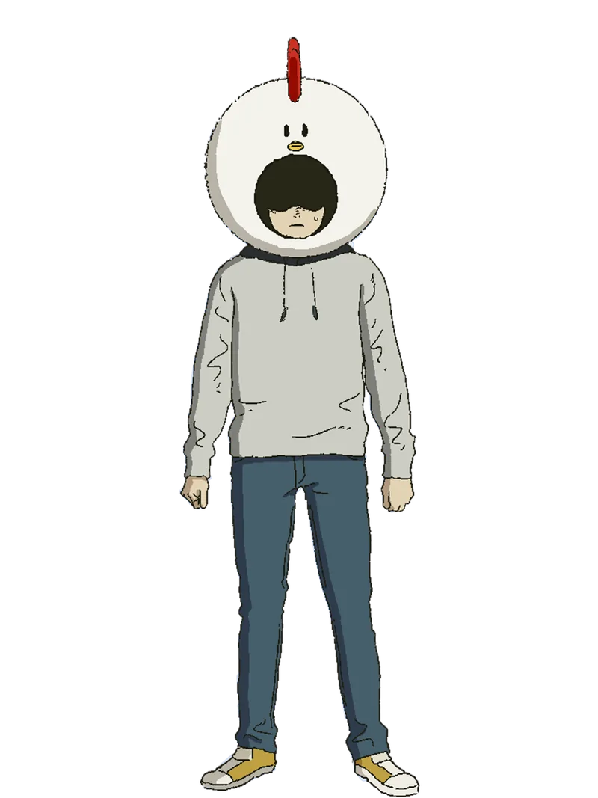

ユウト · CV 小野賢章 (Kenshō Ono)
Yuto
Anak laki-laki pendiam yang hampir tidak pernah melepas kepala ayamnya. Selalu berdiri di depan Ami, seperti tameng.
- Rahasia
- Alien yang menyamar. Ia pemakan teman-teman Ami yang kemudian berubah pikiran dan memilih melindunginya. Wujud monsternya sering dibandingkan pembaca dengan Pochita dari Chainsaw Man.